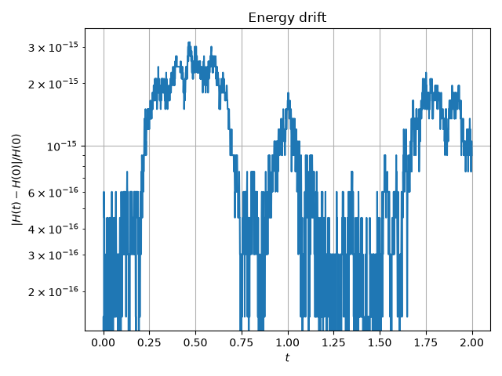
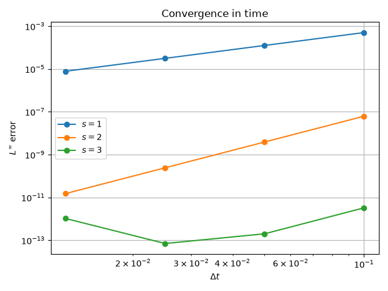
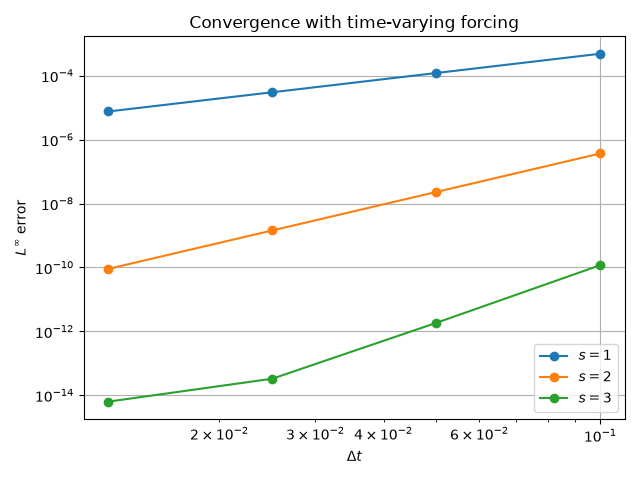
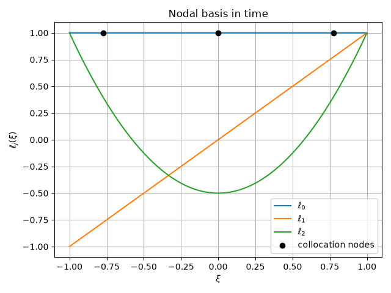

Note
Go to the end to download the full example code.
Time marching with a geometric, structure-preserving scheme#
The fdg hybridized discretization turns a steady PDE into a saddle-point
system that is solved once. Here the same machinery is used in time: a
semi-discrete system
is marched with a collocation scheme whose stage values sit on the integration rule of the time discretisation, so that invariants of the semi-discrete system are conserved up to the iteration tolerance and round-off.
The example uses the first-order system of the wave equation
which has the quadratic invariant (energy)
Because \(H\) is quadratic, a Gauss collocation scheme conserves it exactly. This is what the first run demonstrates: the energy drift stays at round-off level for thousands of steps.
The scheme is built from pieces that are already in the library. The
semi-discrete operator comes from the mass matrices and the incidence
operator of the fdg discretization, and the time discretisation uses
fdg.collocation_tableau(), which exposes the integration nodes and
weights of an integration rule in time.
from time import perf_counter
import matplotlib.pyplot as plt
import numpy as np
from fdg import (
BasisSpecs,
BasisType,
CoordinateMap,
DegreesOfFreedom,
FunctionSpace,
IntegrationMethod,
IntegrationSpace,
IntegrationSpecs,
KFormSpecs,
SpaceMap,
collocation_tableau,
compute_kform_mass_matrix,
incidence_kform_operator,
march,
)
from numpy.polynomial import legendre as L
from scipy.linalg import eigh
The discretization of space is a single element on the reference interval \([-1, 1]\). The potential is a 0-form and its flux is the 1-form one order lower, which is where the derivative of the potential lives.
ORDER_BASIS = 10
ORDER_INTEGRATION = 2 * ORDER_BASIS
base_space = FunctionSpace(BasisSpecs(BasisType.LEGENDRE, ORDER_BASIS))
specs_u = KFormSpecs(0, base_space)
specs_q = KFormSpecs(1, base_space)
N_U = specs_u.component_dof_counts[0]
integration = IntegrationSpace(
IntegrationSpecs(ORDER_INTEGRATION, IntegrationMethod.GAUSS)
)
geometry = FunctionSpace(BasisSpecs(BasisType.LAGRANGE_UNIFORM, ORDER_BASIS))
space_map = SpaceMap(
CoordinateMap(
DegreesOfFreedom(geometry, np.linspace(-1.0, +1.0, ORDER_BASIS + 1)),
integration,
)
)
The mass matrix \(M\) of the 0-form and the mass matrix \(M_q\) of the 1-form flux, followed by the stiffness \(K\). The derivative maps the degrees of freedom of the potential to those of its flux, and the weak form of the second derivative pairs that derivative with the flux mass.
mass = compute_kform_mass_matrix(
space_map, specs_u.order, specs_u.base_space, specs_u.base_space
)
mass_q = compute_kform_mass_matrix(
space_map, specs_q.order, specs_q.base_space, specs_q.base_space
)
derivative = incidence_kform_operator(specs_u, np.eye(N_U))
stiffness = derivative.T @ np.linalg.solve(mass_q, derivative)
Degrees of freedom of a function are its modal Legendre coefficients
The projection helpers of the library normalise their result, so the coefficients are evaluated directly from the rule of the time discretisation below.
def modal_dofs(function) -> np.ndarray:
"""Return the modal Legendre coefficients of a function on the element."""
nodes = np.ascontiguousarray(integration.nodes()[0], np.double)
weights = integration.weights()
vandermonde = L.legvander(nodes, ORDER_BASIS)
degrees = np.arange(ORDER_BASIS + 1)
scaling = (2.0 * degrees + 1.0) / 2.0
return (vandermonde.T @ (weights * function(nodes))) * scaling
The residual of the semi-discrete system and its energy. The state is the stacked pair \(y = (u, v)\), so the residual is \(r(y) = (M v, -K u)\).
def residual(state: np.ndarray, t: float) -> np.ndarray: # noqa: ARG001
"""Residual of the semi-discrete wave equation."""
return np.concatenate((mass @ state[N_U:], -stiffness @ state[:N_U]))
def energy(state: np.ndarray, t: float) -> float: # noqa: ARG001
"""Energy of the semi-discrete wave equation."""
return float(
0.5 * (state[N_U:] @ mass @ state[N_U:] + state[:N_U] @ stiffness @ state[:N_U])
)
# Conserving the energy # # A run of two thousand steps with a two-stage Gauss scheme. The energy # error stays at the level of the iteration tolerance over the whole run.
print("Conserving the energy")
print("---------------------")
NUMBER_STEPS = 2000
STEP_SIZE = 0.001
STAGES = 2
initial_state = np.concatenate(
(modal_dofs(lambda x: np.cos(np.pi * x / 2.0)), np.zeros(N_U))
)
system_mass = np.zeros((2 * N_U, 2 * N_U))
system_mass[:N_U, :N_U] = mass
system_mass[N_U:, N_U:] = mass
start = perf_counter()
result = march(
residual,
initial_state,
STEP_SIZE,
NUMBER_STEPS,
stages=STAGES,
tolerance=1e-13,
mass=system_mass,
invariant=energy,
)
elapsed = perf_counter() - start
initial_energy = result.invariant_values[0]
relative_drift = np.abs(result.invariant_values - initial_energy) / abs(initial_energy)
print(f"stages : {STAGES}")
print(f"steps : {NUMBER_STEPS}")
print(f"maximum energy drift : {np.max(relative_drift):.3e}")
print(f"fixed-point iterations: {sum(result.iterations)}")
print(f"wall time : {elapsed:.3f} s")
fig, ax = plt.subplots()
ax.plot(result.times, relative_drift)
ax.set_yscale("log")
ax.set(xlabel="$t$", ylabel=r"$|H(t) - H(0)| / H(0)$", title="Energy drift")
ax.grid()
fig.tight_layout()
plt.show()

Conserving the energy
---------------------
stages : 2
steps : 2000
maximum energy drift : 3.156e-15
fixed-point iterations: 20272
wall time : 0.953 s
# Convergence in time # # The order of the scheme grows by two per stage. The spatial error is fixed # by comparing against the exact solution of the semi-discrete system, which # is available because the operator is diagonalisable: with an eigenpair # \((H_k, v_k)\) of \(K\) the state is # \(u(t) = v_k \\cos(\\sqrt{H_k}\\, t)\).
print("\nConvergence in time")
print("-------------------")
eigenvalues, eigenvectors = eigh(stiffness, mass)
# The lowest non-constant mode is the smoothest and is used for the
# convergence study, so that the step size is limited by the scheme rather
# than by the stiffness of the operator.
mode = int(np.argmax(eigenvalues > 1e-8))
frequency = float(np.sqrt(eigenvalues[mode]))
shape = eigenvectors[:, mode]
print(f"lowest eigenvalue : {eigenvalues[mode]:.6f}")
print(f"frequency : {frequency:.6f}")
FINAL_TIME = 1.0
STEP_SIZES = (0.1, 0.05, 0.025, 0.0125)
fig, ax = plt.subplots()
for stages in (1, 2, 3):
errors = []
for size in STEP_SIZES:
steps = int(round(FINAL_TIME / size))
run = march(
residual,
np.concatenate((shape, np.zeros(N_U))),
size,
steps,
stages=stages,
tolerance=1e-14,
mass=system_mass,
max_iterations=2000,
anderson_depth=8,
)
exact = np.concatenate(
(
shape * np.cos(frequency * run.times[-1]),
-frequency * shape * np.sin(frequency * run.times[-1]),
)
)
errors.append(np.max(np.abs(run.final_state - exact)))
observed = [np.log2(errors[i] / errors[i + 1]) for i in range(len(errors) - 1)]
print(
f"stages {stages}: errors "
f"{['%.3e' % e for e in errors]} "
f"observed order {['%.2f' % o for o in observed]}"
)
ax.loglog(STEP_SIZES, errors, "o-", label=rf"$s = {stages}$")
ax.set(
xlabel=r"$\Delta t$",
ylabel=r"$L^\infty$ error",
title="Convergence in time",
)
ax.legend()
ax.grid()
fig.tight_layout()
plt.show()

Convergence in time
-------------------
lowest eigenvalue : 0.744027
frequency : 0.862570
stages 1: errors ['4.968e-04', '1.243e-04', '3.109e-05', '7.773e-06'] observed order ['2.00', '2.00', '2.00']
stages 2: errors ['6.166e-08', '3.855e-09', '2.410e-10', '1.506e-11'] observed order ['4.00', '4.00', '4.00']
stages 3: errors ['3.256e-12', '1.993e-13', '7.032e-14', '1.035e-12'] observed order ['4.03', '1.50', '-3.88']
# Time-varying boundary conditions # # The residual receives the exact time of every stage, so time-varying data # enters directly through it and the order of the scheme is unaffected. The # energy is no longer an invariant here: the forcing supplies it. What the # scheme still guarantees is that the energy follows the discrete balance law # of the semi-discrete system, and that the solution converges at order # \(2s\) against a known closed form.
# The system below is driven by \(g(t)\), chosen so that # \(y(t) = c \, e^{\lambda t} (1 + b t)\) is the exact solution.
print("\nTime-varying boundary conditions")
print("--------------------------------")
decay = np.array([-1.0, -2.0])
offset = np.array([1.0, 0.5])
slope = np.array([0.7, -0.3])
def forcing(t: float) -> np.ndarray:
"""Return the time-dependent boundary forcing at time ``t``."""
return offset * slope * np.exp(decay * t)
def exact_solution(t: float) -> np.ndarray:
"""Return the closed-form solution of the forced system."""
return offset * np.exp(decay * t) * (1.0 + slope * t)
fig, ax = plt.subplots()
for stages in (1, 2, 3):
errors = []
for size in STEP_SIZES:
steps = int(round(FINAL_TIME / size))
run = march(
lambda y, t: decay * y + forcing(t),
offset.copy(),
size,
steps,
stages=stages,
tolerance=1e-13,
)
errors.append(np.max(np.abs(run.final_state - exact_solution(1.0))))
observed = [np.log2(errors[i] / errors[i + 1]) for i in range(len(errors) - 1)]
print(
f"stages {stages}: errors "
f"{['%.3e' % e for e in errors]} "
f"observed order {['%.2f' % o for o in observed]}"
)
ax.loglog(STEP_SIZES, errors, "o-", label=rf"$s = {stages}$")
ax.set(
xlabel=r"$\Delta t$",
ylabel=r"$L^\infty$ error",
title="Convergence with time-varying forcing",
)
ax.legend()
ax.grid()
fig.tight_layout()
plt.show()

Time-varying boundary conditions
--------------------------------
stages 1: errors ['4.863e-04', '1.213e-04', '3.031e-05', '7.578e-06'] observed order ['2.00', '2.00', '2.00']
stages 2: errors ['3.694e-07', '2.304e-08', '1.439e-09', '8.995e-11'] observed order ['4.00', '4.00', '4.00']
stages 3: errors ['1.184e-10', '1.849e-12', '3.306e-14', '6.328e-15'] observed order ['6.00', '5.81', '2.39']
# The tableau in time # # The stage values of the scheme are the values of a 0-form on the nodes of # an integration rule. Below, the collocation tableau of a three-stage Gauss # scheme is shown together with the Legendre polynomials of the nodal basis.
print("\nCollocation tableau")
print("-------------------")
tableau = collocation_tableau(3)
print(f"nodes : {np.round(tableau.nodes, 6)}")
print(f"weights : {np.round(tableau.weights, 6)}")
print(f"sum of weights : {tableau.weights.sum():.15f}")
row_sums_error = np.max(
np.abs(tableau.integration_matrix.sum(axis=1) - tableau.nodes - 1.0)
)
print(f"row sums of A - (tau+1): {row_sums_error:.3e}")
nodes = np.linspace(-1.0, +1.0, 201)
basis = np.array([L.legval(nodes, [0.0] * j + [1.0]) for j in range(tableau.stages)])
fig, ax = plt.subplots()
ax.plot(nodes, basis.T, label=[rf"$\ell_{j}$" for j in range(tableau.stages)])
ax.scatter(
tableau.nodes,
np.ones(tableau.stages),
color="black",
zorder=3,
label="collocation nodes",
)
ax.set(xlabel=r"$\xi$", ylabel=r"$\ell_j(\xi)$", title="Nodal basis in time")
ax.legend()
ax.grid()
fig.tight_layout()
plt.show()

Collocation tableau
-------------------
nodes : [-0.774597 -0. 0.774597]
weights : [0.555556 0.888889 0.555556]
sum of weights : 2.000000000000055
row sums of A - (tau+1): 4.352e-14
Total running time of the script: (0 minutes 1.910 seconds)